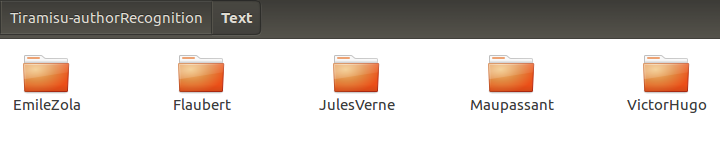
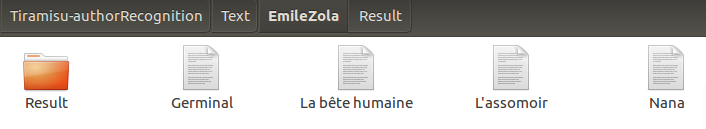
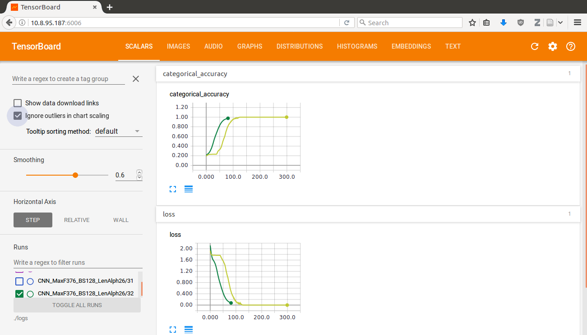
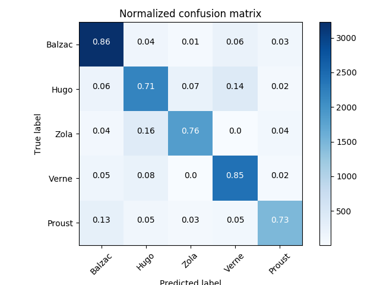

Author Recognition example
Our network can be used in various ways. If you want to train it on your own data, follow me here.
If you prefer to test our solution on our data to assess its reliability, follow me here.
If you just want to know who wrote a piece of text, follow me here.
Finally, if your plan is to convert our network to a Pacman solver, feel free to do it. But please send us a video!
Training on your own data
If you want the network to consider specific authors, you will need to train the network from scratch. This can be a long process, but there is no workaround. In order to gain time, please install Cuda. Otherwise ... Well, launch the program before leaving on vacations because it will take too much time. Really. Install it.
Build your database
Cuda has been correctly set up ? Congratulations ! You've done the hardest part. Now, let's build your database.
Set up the architecture
Pick the books you want to work on and create a directory named Text. After that, create one subdirectory per author you want to have in your database, and name it after him/her.
The architecture of your Text directory should be the following:

Once created, move the correct files to the correct directories.
In every subdirectory you have created, create a new subdirectory called Result. That is the place we will store the clean file our network will take as an input.
Each one of your directory should look like this now:

Cleaning the texts
Now that you have all your files under your hand, it's time to clean and concatenate them.
In order to do that, issue the following command from Tiramisu's root directory:
python3 clean_text.py --in_dir 'Text' --out_dir 'Result'
The program will run for a while and then exit. If the program encounters an error, please launch the findIncorrectTexts() script and remove the incorrect files.
Training the network
Building the network is simple. Just issue the following command:
python3 classifier.py --newdata --train
The above command will result in three things: building of the database, building of the model and training of the model.
Depending on the available computing power you have, the two first might take minutes to complete without any animation. After this while, you should end up seeing something like this:
python3 PSTv2.py --train -m 'Tried 2048 hidden units instead of 1024'Using TensorFlow backend.
Loading done : 32890
Logging directory : ./logs/CNN_MaxF376_BS128_LenAlph26/33
[Building Model]
Train on 32890 samples, validate on 14097 samples
2017-05-18 16:49:08.816226: I tensorflow/core/common_runtime/gpu/gpu_device.cc:887] Found device 0 with properties:
name: Quadro K620
major: 5 minor: 0 memoryClockRate (GHz) 1.124
pciBusID 0000:01:00.0
Total memory: 1.95GiB
Free memory: 1.73GiB
2017-05-18 16:49:08.816237: I tensorflow/core/common_runtime/gpu/gpu_device.cc:908] DMA: 0
2017-05-18 16:49:08.816241: I tensorflow/core/common_runtime/gpu/gpu_device.cc:918] 0: Y
2017-05-18 16:49:08.816249: I tensorflow/core/common_runtime/gpu/gpu_device.cc:977] Creating TensorFlow device (/gpu:0) -> (device: 0, name: Quadro K620, pci bus id: 0000:01:00.0)
Epoch 1/300:
4480/32890 [===>..........................] - ETA: 133s - loss: 2.1511 - categorical_accuracy: 0.2248
Good ! Now all you have to do is wait. If you want to stop the network from training, wait for the epochs to end or hit CTRL+C. This won't exit the program, it will just end the training after the current epoch.
Next step here.
Testing our implementation
You want to see how robust our model is? That's the spirit!
Acquiring the dataset
Download our dataset as a numpy dumped array and place the zipfile in Tiramisu's root folder.
Right-click on the obtained folder and unzip it.
Running the network
Simply run the following command. It's as easy as that.
python3 classifier.py
No error? Great! Next step here.
Analyze a text
UNDER CONSTRUCTION
Analyzing the results
On the go
Tensorflow has created a powerful tool called Tensorboard. This tool enables us to have a live view of the behaviour of the network. In order to have access to Tensorboard, issue the following command from Tiramisu's root directory:
tensorboard --logdir logs/
Then, open your favorite web browser and navigate to localhost:6006. Click on the runs that interest you, and you should be able to see something like this:

At the end
The network is done training. Now, some reports should have been computed and here is what you should see:
Successfully loaded model from ./save/last.hdf5
[Reports creation]
14080/14097 [============================>.] - ETA: 0s
[Predictions]
[0 1 1 ..., 1 0 0]
[Expected]
[[ 1. 0. 0. 0. 0.]
[ 1. 0. 0. 0. 0.]
[ 0. 0. 0. 1. 0.]
...,
[ 0. 0. 0. 1. 0.]
[ 1. 0. 0. 0. 0.]
[ 1. 0. 0. 0. 0.]]
[Reports]
[Classification Report]
precision recall f1-score support
Balzac 0.85 0.78 0.81 3768
Hugo 0.67 0.77 0.72 3066
Zola 0.73 0.84 0.78 2415
Verne 0.88 0.76 0.81 2789
Proust 0.77 0.75 0.76 2059
avg / total 0.79 0.78 0.78 14097
A clearer representation of the confusion matrix should also appear:

What does it mean ? Basically, the darker on the diagonal the better. This matrix shows the predictions of the network relatively to the true labels.
An unexpected error occured ? Please refer to the FAQ, and if it doesn't help, open an issue on the github.